library(tbinenglanddataclean)
## turn on/off interactive graphs
interactive <- FALSE
## rebuild existing data sets
rebuild <- FALSEif (!file.exists("~/data/tb_data/tbinenglanddataclean/clean_ets_2016.rds") || rebuild) {
clean_munge_ets_2016(data_path = "~/data/tb_data/ETS/ETS_2016_extract/SAbbott_BCG dataset_version2_final140217.dta",
return = FALSE,
save = TRUE,
save_name = "clean_ets_2016",
save_path = "~/data/tb_data/tbinenglanddataclean",
save_format = c("rds", "csv"),
verbose = TRUE)
}if (!file.exists("~/data/tb_data/tbinenglanddataclean/E_demo_2000_2015.rds") || rebuild) {
clean_demographics_uk(data_path = "~/data/tb_data/UK_demographics",
demo_2000 = "UK_2000_age.csv",
demo_2001_2015 = "UK_2001_2015_age.csv",
countries = c("E"),
return = FALSE,
save = TRUE,
save_name = "E_demo_2000_2015",
save_path = "~/data/tb_data/tbinenglanddataclean",
save_format = c("rds", "csv"),
verbose = TRUE,
interactive = interactive)
}if (!file.exists("~/data/tb_data/tbinenglanddataclean/formatted_LFS_2000_2016.rds") || rebuild) {
clean_labour_force_survey(data_path = "~/data/LFS",
years = 2000:2016,
years_var = list( '2000' = c('age', 'sex', 'cry', 'govtof', 'pwt07'),
'2001' = c('age', 'sex', 'cry01', 'country', 'pwt07'),
'2002' = c('AGE', 'SEX', 'CRY01', 'COUNTRY', 'PWT14'),
'2003' = c('AGE', 'SEX', 'CRY01', 'COUNTRY', 'PWT14'),
'2004' = c('AGE', 'SEX', 'CRY01', 'COUNTRY', 'PWT14'),
'2005' = c('AGE', 'SEX', 'CRY01', 'COUNTRY', 'PWT14'),
'2006' = c('AGE', 'SEX', 'CRY01', 'COUNTRY', 'PWT14'),
'2007' = c('AGE', 'SEX', 'CRY01', 'COUNTRY', 'PWT14'),
'2008' = c('AGE', 'SEX', 'CRY01', 'COUNTRY', 'PWT14'),
'2009' = c('AGE', 'SEX', 'CRY01', 'COUNTRY', 'PWT14'),
'2010' = c('AGE', 'SEX', 'CRY01', 'COUNTRY', 'PWT14'),
'2011' = c('AGE', 'SEX', 'CRY01', 'COUNTRY', 'PWT14'),
'2012' = c('AGE', 'SEX', 'CRY12', 'COUNTRY', 'PWT14'),
'2013' = c('AGE', 'SEX', 'CRY12', 'COUNTRY', 'PWT16'),
'2014' = c('AGE', 'SEX', 'CRY12', 'COUNTRY', 'PWT16'),
'2015' = c('AGE', 'SEX', 'CRY12', 'COUNTRY', 'PWT16'),
'2016' = c('AGE', 'SEX', 'CRY12', 'COUNTRY', 'PWT16')),
return = FALSE,
save = TRUE,
save_name = "formatted_LFS_2000_2016",
save_path = "~/data/tb_data/tbinenglanddataclean",
save_format = c("rds", "csv"),
verbose = TRUE,
interactive = interactive)
}if (!file.exists("~/data/tbinenglanddataclean/E_ons_lfs_2000_2016.rds") || rebuild) {
combine_ons_with_lfs(data_path = "~/data/tb_data/tbinenglanddataclean",
ons_name = "E_demo_2000_2015.rds",
lfs_name = "formatted_LFS_2000_2016.rds",
countries = "England",
return = FALSE,
save = TRUE,
save_name = "E_ons_lfs_2000_2016",
save_path = "~/data/tb_data/tbinenglanddataclean",
save_format = c("rds", "csv"),
verbose = TRUE,
interactive = interactive)
}## Loading demographic data from: ~/data/tb_data/tbinenglanddataclean/E_demo_2000_2015.rds## Loading labour force survey data from: ~/data/tb_data/tbinenglanddataclean/formatted_LFS_2000_2016.rds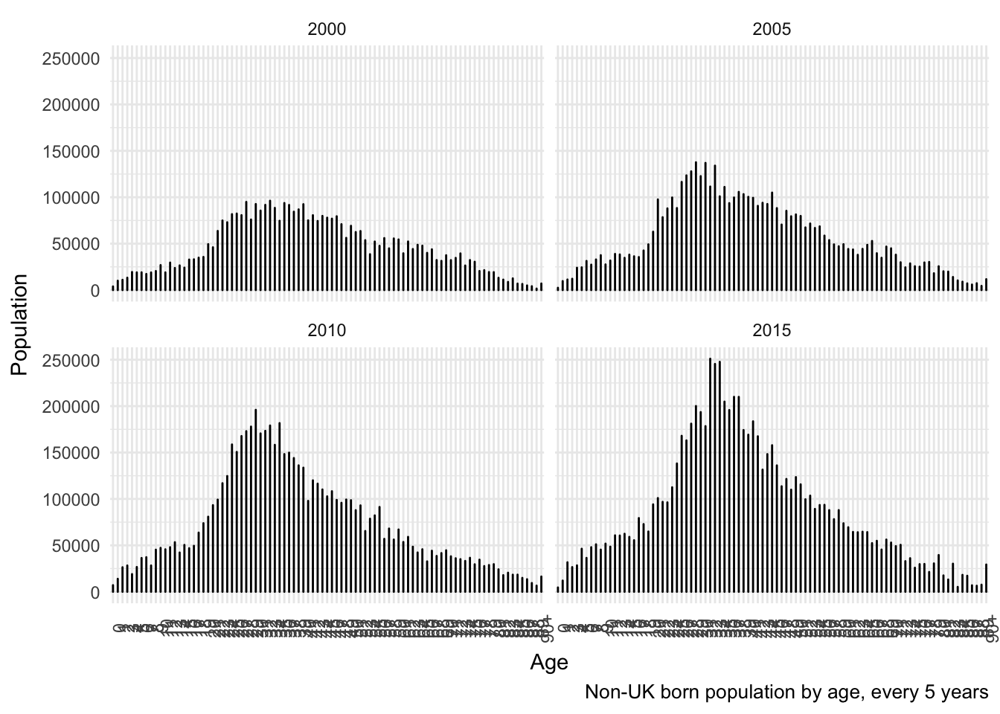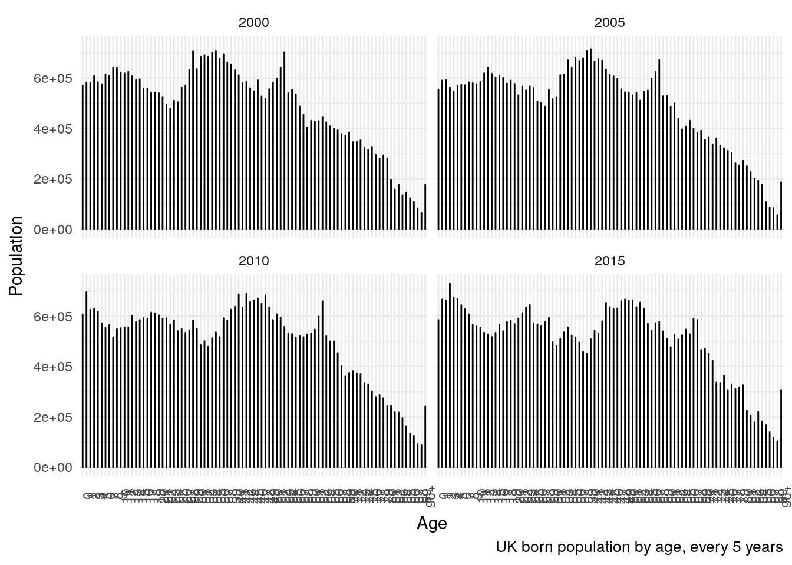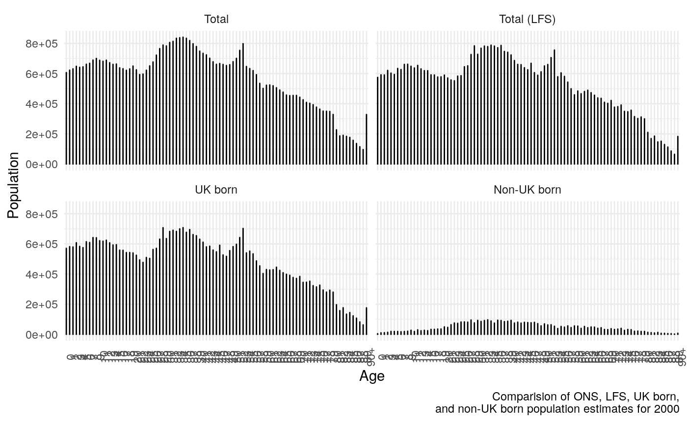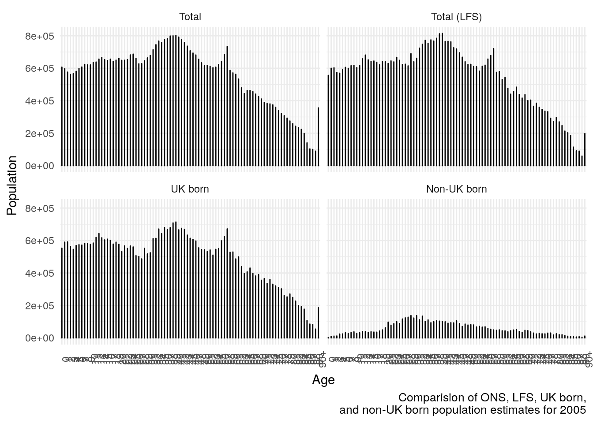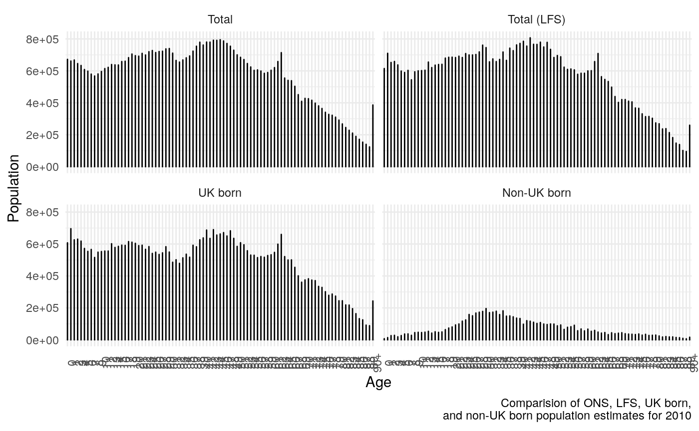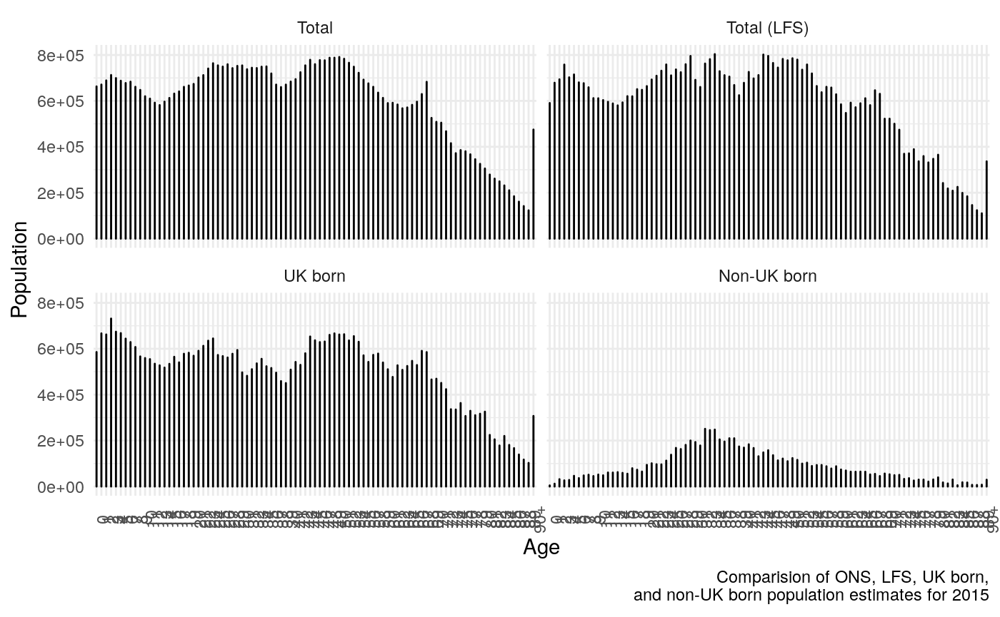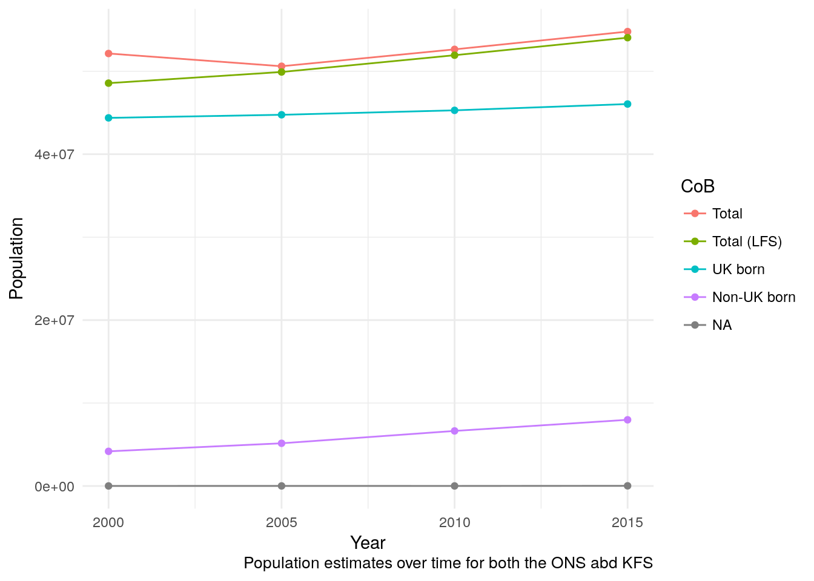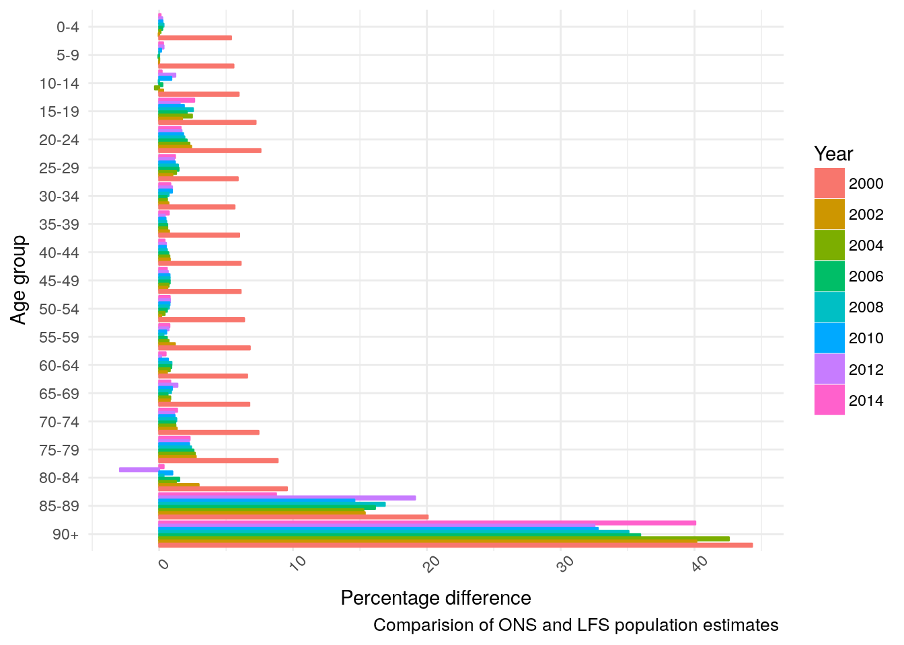
## ONS combined with LFS data saved to: ~/data/tb_data/tbinenglanddataclean/E_ons_lfs_2000_2016## Formated as, rds, csv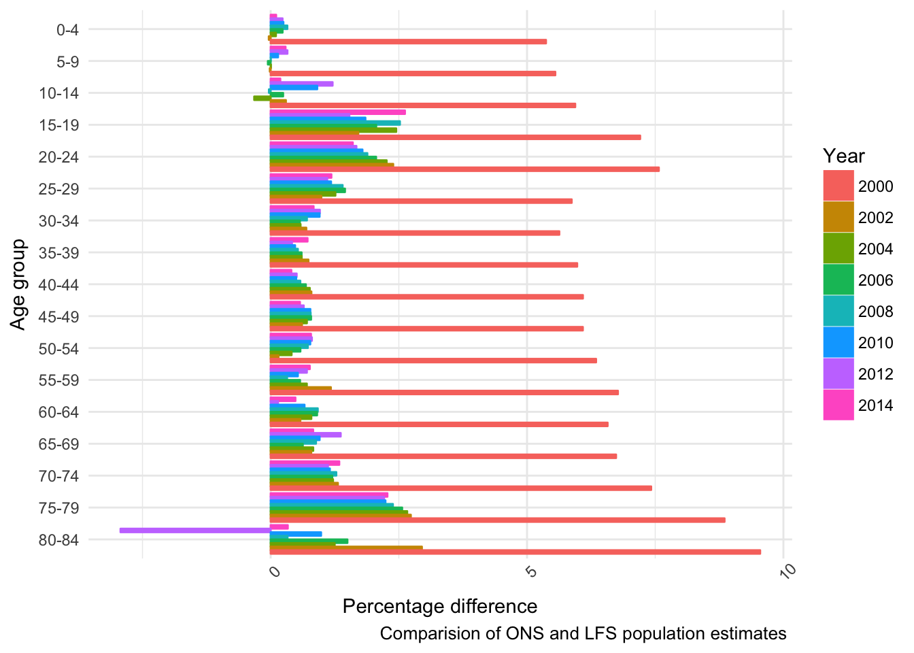
if (!file.exists("~/data/tb_data/tbinenglanddataclean/england_births.rds") || rebuild) {
clean_and_munge_england_births(birth_path = "~/data/tb_data/UK_demographics/annual_reference_table.xls",
projected_birth_path = "~/data/tb_data/UK_demographics/england_population_projections.xls",
return = FALSE,
save = TRUE,
save_name = "england_births",
save_path = "~/data/tb_data/tbinenglanddataclean",
save_format = c("rds", "csv"),
verbose = TRUE,
interactive = interactive)
}if (!file.exists("~/data/tb_data/tbinenglanddataclean/england_mortality_rate.rds") || rebuild) {
clean_and_munge_england_life_expectancy(life_tables_path = "~/data/tb_data/UK_demographics/england_life_tables.xls",
sheets = paste0(seq(2013,1998, -1), "-", seq(2015,2000, -1)),
return = FALSE,
save = TRUE,
save_name = "england_mortality_rates",
save_path = "~/data/tb_data/tbinenglanddataclean",
save_format = c("rds", "csv"),
verbose = TRUE,
interactive = interactive,
theme_set = theme_minimal)
}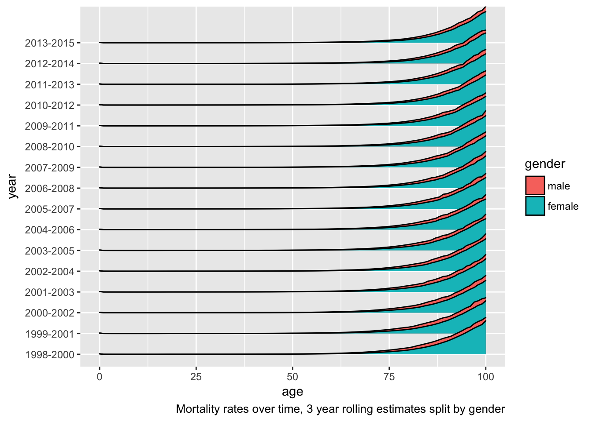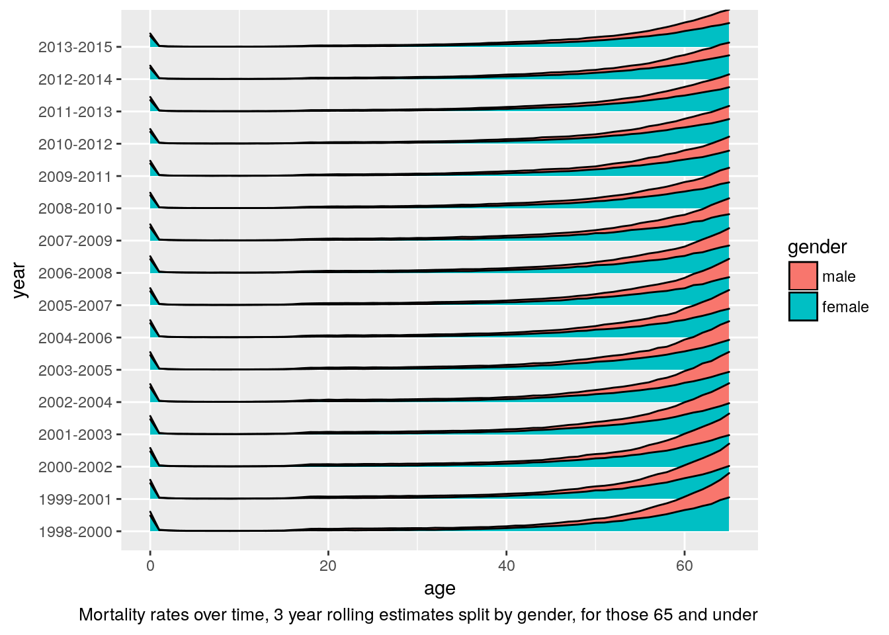
## Mortality rates saved to: ~/data/tb_data/tbinenglanddataclean/england_mortality_rates## Formated as, rds, csv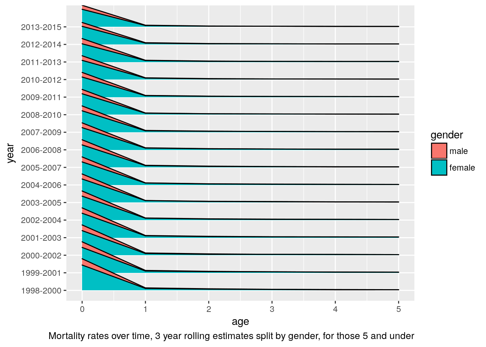
calculate_incidence_ets_lfs_ons(data_path = "~/data/tb_data/tbinenglanddataclean",
ets_name = "clean_ets_2016.rds",
demo_name = "E_ons_lfs_2000_2016.rds",
return = FALSE,
save = TRUE,
incidence_name = "incidence" ,
grouped_incidence_name = "age_grouped_incidence",
condensed_grouped_incidence_name = "condensed_age_group_incidence",
cases_demo_incidence_name = "cases_demo_incidence",
save_path = "~/data/tb_data/tbinenglanddataclean",
save_format = c("rds", "csv"),
verbose = FALSE,
interactive = interactive)## Joining, by = c("Age", "Year", "CoB")